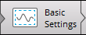

EddyPro® 7 Software
Basic settings
During a data processing session, you will use the Basic Settings page to specify preferences for your project. For all projects, you enter the Basic Settings page after completing all required fields in the Project Creation page and clicking on the button.

Note: Can't get to the Basic Settings page? EddyPro will only let you advance from one page to the next if all required fields have been completed. View EddyPro Messages (View > EddyPro Messages) for more guidance.
To use the Basic Settings page:
- Enter the Raw data directory that includes the raw data files.
- If files are in subfolders, select the Search in subfolders check box.
- (optional) The data contained in the raw data folder (and its subfolders, if chosen) will determine the time period to be processed.
- If you wish to obtain results for a period different from that spanned by raw data, check the Select a different period box and specify the Starting date of dataset and the Ending date of dataset. Two scenarios are possible:
-
- If you also select Build continuous dataset in the Output Files page, you will obtain result files that encompass the specified period, no matter if this is shorter, longer or partially overlapping with the period covered by raw data.
- If you do not select Build continuous dataset, then you will get results encompassing the intersection between the selected period and the period covered by raw data files.
- For ASCII, Binary, TOB1, or SLT files only, EddyPro requires you to enter the raw file name format. Follow the steps in the software to enter the raw file name correctly.
- In the Output directory field, enter the directory where you want your output files to be placed.
- Enter an Output ID. This will be appended to the file name of each output file.
- Set the Missing samples allowance.
- If the number of samples missing (or eliminated through the quality screening procedures) in a time period exceeds this threshold, the averaging period will be skipped. The maximum missing sample allowance is set to 40%, which means that EddyPro will not process a file if more than 40% of the samples are missing for that period.
- Select variables that you want to include in the flux computation project in the Select Items for Flux Computation section.
- If your raw files contain multiple columns for a variable (e.g., CO2), specify which column to use.
- Configure the Flags settings.
- Configure the Wind Filter.
- The Wind Filter is used to omit from processing data from a specified range of compass directions. You can configure up to 16 sectors with angles ranging from 1 to 360 degrees. EddyPro will omit specified directions from the analysis.
- Save the project.
- To process the data immediately, click the Express Mode button. To process the data with advanced settings, click the Advanced Settings button and configure the Advanced Settings. See Processing options.
The Select Items for Flux Computation section is used to choose which variables are used to calculate fluxes, from those available in the raw files. Raw files may contain redundant measurements, such as two or more readings for the same gas concentration, temperatures or pressure, as well as wind data from more than one anemometer. However, EddyPro only uses one reading of each sensitive variable for each processing project. For example, only one CO2 concentration reading can be used to calculate CO2 fluxes.
The Flags section is used to configure flags. Each column of the raw data file that was not tagged as “to be ignored” can be used as a mask to filter out individual high frequency records. Up to ten flags can be specified.
Note: An entire record (that is, all variables measured at a certain time instant, one line of raw data) is eliminated any time a flag variable does not comply with its quality criterion.
In this page: